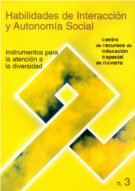
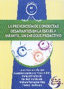
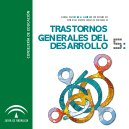

Publicaciones para educadores
- El síndrome de Asperger. Estrategias prácticas para el aula. Guía para el profesorado
-
…Todos los individuos a quienes se ha diagnosticado el Síndrome de Asperger comparten un conjunto de dificultades fundamentales, a pesar de que todos ellos sean muy diferentes entre sí. En esta guía describimos la naturaleza de estas discapacidades fundamentales, explicamos cómo éstas pueden crear problemas en la escuela y facilitamos sugerencias prácticas para su manejo.
La primera parte de la guía muestra una visión general del síndrome de Asperger y resalta las tres áreas de discapacidad básicas. En esta sección comentamos también brevemente las respuestas educativas para alumnos con este síndrome. El resto de la guía se divide en seis secciones, tres de ellas corresponden a estas discapacidades básicas y las restantes se dedican a amplias áreas de dificultad experimentadas con frecuencia y presentes en la escuela…
- Espectro Autista: definición, evaluación e intervención educativa
-
… Uno de los objetivos principales de la Consejería de Educación de la Junta de Extremadura es conseguir la inclusión e igualdad del alumnado para el acceso y permanencia en el Sistema Educativo. .
Pero, la igualdad no será posible si no se utilizan medidas compensatorias y de discriminación positiva, a través de las cuales las ayudas que se le presten al alumnado sean proporcionalmente directas a su nivel de necesidades. La verdadera igualdad de oportunidades ha de contemplar la posibilidad que se les brinda a las personas de alcanzar las más altas cotas de formación a las que éstas puedan aspirar.
En este libro se explica cómo perciben la realidad los alumnos y alumnas afectadas por el trastorno generalizado del desarrollo (autismo), las razones de su conducta anómala y de su resistencia a los cambios, y los motivos por los que necesitan un entorno organizado y estructurado con una determinada rutina diaria. En definitiva, se ofrece información sobre los aspectos evolutivos de las personas con autismo, la identificación y valoración de las necesidades educativas especiales de este alumnado, así como su tratamiento, intervención y propuestas de actuación en el contexto educativo…
- Estrategias simples que funcionan. Consejos que ayudan para todos los educadores de estudiantes con síndrome de Asperger, autismo de alto funcionamiento, y discapacidades relacionadas
-
…Los niños y jóvenes con síndrome de Asperger (SA), autismo de alto funcionamiento (AAF), trastornos generalizados del desarrollo no especificados (TGD-NE), y otras excepcionalidades relacionadas tienen un gran potencial, pero demasiado a menudo sus habilidades no se realizan. En parte esto sucede porque sus habilidades se enmascaran con sus dificultades. Es decir, muchos alumnos con SA/AAF tienen un conocimiento impresionante en cosas particulares y una memoria excepcional. Estos atributos tienden a quedar difuminados por el hecho de que no entienden aspectos del contexto escolar que otros alumnos cogen automáticamente sin necesidad de ninguna instrucción. A menudo estos aspectos son el curriculum escondido, esto incluye aquellas normas que generalmente se entienden, como por ejemplo
Cuando vamos a la sala de descanso, hay que estar en silencio y si se le tiene que decir algo al profesor, hay que hacerlo silenciosamente, no anunciándolo a toda la clase
… - Guía para la atención educativa a los alumnos y alumnas con trastornos del espectro autista
-
…La Consejería de Educación y Ciencia continúa, con esta nueva guía, la colección de publicaciones que tiene por finalidad difundir entre la comunidad educativa la información básica acerca del alumnado con necesidades educativas especiales afectado por distintas discapacidades de tipo físico, psíquico o sensorial. Por ello, las guías se han diseñado resaltando los aspectos esenciales que hacen posible un primer acercamiento a cada grupo. Contienen la delimitación de las características generales de esta población, los sistemas y pruebas de detección, la determinación de las necesidades educativas que suelen presentar estos escolares y la respuesta educativa que corresponde a cada una.
Asimismo, estas guías constituyen un primer acercamiento que se completará con la profundización en la bibliografía y en las páginas web recogidas en las mismas o contactando con los equipos técnicos de la Consejería de Educación y Ciencia en cada provincia.
En esta guía se centra la atención sobre el alumnado con trastornos del espectro autista, es decir, niños y niñas con autismo o con rasgos próximos a este síndrome. Se trata de un grupo de escolares que necesita una respuesta educativa muy estructurada y planificada, que ha de ser desarrollada y evaluada de un modo muy organizado y sistemático…
- Guía para la atención educativa del alumnado con trastorno generalizado de desarrollo (autismo)
-
…El objetivo de esta guía es informar y sensibilizar a todas las personas sobre el autismo y sus necesidades y la forma más adecuada de abordarlas.
En los últimos años las investigaciones sobre el autismo nos han permitido profundizar un poco más en este trastorno, dándonos a conocer los signos de alarma que suelen aparecer en edades tempranas y que, detectados a tiempo, van a posibilitar a los profesionales y a las familias una intervención más adecuada en sus fases iniciales, de forma que facilite el desarrollo máximo de las potencialidades del niño/a y consiga, ante todo, que sea feliz.
Esta guía pretende contribuir a la difusión y conocimiento del concepto de autismo, de las características y los signos de alerta que ayudan a identificarlo tempranamente, y a significar la importancia de una adecuada intervención precoz que va asociada, según todas las investigaciones, con un mejor pronóstico. Este conocimiento ayudará a disminuir el desconcierto e incertidumbre de las personas que se relacionan con el niño/a autista: padres, profesores, hermanos….
- Guía para la integración del alumnado con TEA en Educación Primaria
-
…Atender con eficiencia a un alumnado heterogéneo supone un importante desafío para la comunidad educativa que requiere de una dotación de recursos y estrategias adecuados con los que poder ofrecer una respuesta pedagógica adaptada y al mismo tiempo un nivel optimo de intervención. Cada alumno tiene unas necesidades educativas individuales que requieren ser atendidas para que pueda tener acceso a conocimientos, habilidades, sociabilidad, autonomía, etc., propios del grupo social en el que integrarse. En la categoría de escolares con ha de necesidades educativas especiales se encuentra el colectivo de alumnos con Trastorno del Espectro Autista (TEA), con peculiaridades que es preciso conocer y tener en cuenta para llevar a cabo una intervención acertada y eficiente. Puesto que en la escuela se desarrolla una parte importante de la vida de los niños; para favorecer la evolución personal y social del alumnado es preciso que la intervención psicoeducativa ofrezca respuestas a las necesidades individuales aportando el apoyo necesario en la instrucción académica y favoreciendo, también, la integración en su grupo de iguales. Para cumplir con éxito este propósito se requiere que el colegio cuente con los recursos necesarios, el ambiente se organice de modo conveniente, su profesorado tenga la formación apropiada, el equipo docente trabaje en colaboración, se establezca una buena relación de la escuela con la familia y, sobre todo, que el niño sea considerado como núcleo primordial de la enseñanza…
- Habilidades de interacción y autonomía social
-

… La Educación Secundaria Obligatoria aspira a promover el desarrollo integral de las personas, por ello debemos intentar potenciar todo tipo de capacidades, no sólo las cognitivas o intelectuales, sino también las que hacen referencia a la inserción social, al equilibrio personal o afectivas y a las relaciones interpersonales.
En Secundaria la diversidad del alumnado se acentúa en relación a otras etapas, ya que se van incorporando nuevos elementos de diferenciación entre ellos. Muchos de estos jóvenes son capaces de desarrollar espontáneamente las habilidades y destrezas necesarias para beneficiarse de la convivencia y la interacción con sus compañeros. Pero resulta evidente que otros muchos alumnos carecen de esas destrezas y por ello se ven privados de las ventajas que produce la convivencia con otros iguales. Es el profesorado quien debe proporcionar respuestas diversas y diferenciadas para que la mayoría del alumnado pueda acceder a los objetivos genera les de la ESO…
- Intervención educativa con un alumno con síndrome de Asperger
-
…El siguiente trabajo desarrolla una experiencia educativa con un alumno diagnosticado con síndrome asperger. Se llevó a cabo un programa que trabajaba aspectos como la interacción y relaciones sociales, comunicación, dificultades sensoriales y motoras, dificultades emocionales, conducta y habilidad para el trabajo. Los resultados obtenidos con esta experiencia han sido satisfactorios para el desarrollo educativo y social del alumno…
- Intervención educativa en el alumnado con trastornos del espectro autista
-
…Los fines de la educación para las personas con Trastornos del Espectro Autista (en adelante TEA) son los mismos que para el resto de alumnos, con o sin necesidades educativas especiales. Hoy día, parece por todos asumida la necesidad de educar y atender de forma adecuada a todas las personas, al menos hasta una cierta edad; para lo que es necesario proceder, por parte del centro y del profesorado, a las adecuaciones necesarias para responder a todo el alumnado, haciendo que nuestras escuelas no sólo admitan a todos, sino que realmente sean escuelas para todos; adaptando el sistema a las personas, en lugar de que sean éstas las que se adapten. La siguiente exposición revisa algunos planteamientos que los centros educativos pueden y deben hacer en la educación de las personas con TEA; todo ello para mejorar la calidad de vida de estas personas, comprendiéndolos mejor y haciendo que ellos también comprendan más nuestro mundo, procurando que sean lo más autónomos posible en él, para lo que una respuesta educativa adecuada y ajustada será el mejor camino.…
- La atención educativa al alumnado con trastorno del espectro autista
-
…Cuando nace un niño, los padres y familiares van siguiendo paso a paso cada etapa de crecimiento del niño, pero en algunos casos los padres observan que a partir del primer año de vida de su hijo, este no evoluciona correctamente y no es tan sano como se creía. Hay un trastorno en su conducta, su hijo vive en su propio mundo al que no se puede llegar porque no habla, grita sin causa alguna, se balancea todo el día (rocking), miran durante horas fijamente un objeto, caminan en punta de pie o siendo bebés caen de los brazos maternos como bolsas de arena. Ante estas observaciones los padres concurren al pediatra; quien luego de varios exámenes, diagnóstica el Síndrome autista. El autismo no es una enfermedad, es un síndrome, un conjunto de síntomas que caracterizan un trastorno degenerativo del desarrollo bio-psico-social. Es una discapacidad severa y crónica del desarrollo. Aparece durante los tres primeros años de vida y es más común en varones que en mujeres de todo tipo de raza, etnia y clase social de todo el mundo. Las personas con autismo tienen un promedio de vida igual que las personas de la población en general…
- La prevención de conductas desafiantes en la escuela infantil
-

… Este manual es resultado de la cooperación de un grupo de profesionales del área de psicopedagogía, con el objetivo común de llenar un espacio de intervención, aún vacío, en el ámbito de la educación preescolar: el manejo de las conductas desafiantes.
En la actualidad, una de las problemáticas más relevantes que enfrentan los educadores es el manejo de estas conductas que manifiestan los infantes que asisten al preescolar, cuya atención ya no queda exclusivamente circunscrita al ámbito familiar; la escuela como instancia educativa asume una parte de esta responsabilidad, debe apoyar, junto a la familia, el desarrollo de las habilidades sociales…
- Las habilidades sociales en el currículo
-
… Este marco general se ve completado con la filosofía y orientaciones suministradas por el informe que en 1996 realizó para la UNESCO una comisión de expertos presidida por Jacques Delors. En este informe, titulado «La educación encierra un tesoro», se afirma que la educación para el siglo XXI ha de estructurarse en torno a cuatro pilares básicos que son aprender a conocer, aprender a hacer, aprender a vivir juntos y aprender a ser (Delors, 1996). Nuestra propuesta en el presente trabajo se focaliza en el tercer pilar, lo que viene denominándose aprendizaje de la convivencia, educación para las relaciones interpersonales o también enseñanza de habilidades de interacción social, pero, por supuesto, sin olvidar los otros tres pilares. Es más, defendemos que para aprender a vivir con otros, se requiere el desarrollo de los otros aspectos personales señalados, ya que se produce una interacción recíproca entre todos facilitando y posibilitando el desarrollo integral que la educación tiene como meta…
- Los trastornos generales del desarrollo. Una aproximación desde la práctica. (Volumen I. Los trastornos del espectro autista)
-
…Ponerse en el lugar de aquel a quien tratamos de ayudar es un principio básico que, si bien no garantiza el éxito de nuestros esfuerzos, sí mejora la eficacia de éstos. Ser capaces de ponernos en sus zapatos nos permitirá conocer las peculiaridades de su relación con el entorno, sus puntos fuertes y débiles, sus necesidades y las estrategias que mayor probabilidad de éxito tendrán para lograr una aceptable relación entre dicha persona y su entorno.
Durante muchos años, más de 40, las personas con trastornos del espectro autista (TEA) han resultado extremadamente opacas para aquellos que hemos trabajado con ellas. Nos ha sido muy difícil ponernos en su lugar ya que, aunque imitar sus peculiares conductas repetitivas y de aislamiento e incomunicación resultaba sencillo, desconocíamos qué podría estar ocurriendo en su mente.
La diversidad de hipótesis acerca de la naturaleza del trastorno autista que ha habido durante esos años, todas ellas centradas más en la causa que en los procesos mentales subyacentes, ha limitado mucho la eficacia de los diferentes tratamientos aplicados para su rehabilitación…
- Los trastornos generales del desarrollo. Una aproximación desde la práctica. (Volumen II. El síndrome de Asperger. Respuesta educativa)
-
…Actualmente se consideran los trastornos del espectro autista como trastornos neuropsiquiátricos que presentando una amplia variedad de expresiones clínicas, son el resultado de disfunciones multifactoriales del desarrollo del sistema nervioso central. En el concepto del espectro autista no solo se incluyen a los niños y niñas con trastornos generalizados del desarrollo, descritos por las clasificaciones internacionales como el CIE-10 o el DSM-IV, también se engloban a aquellos que presentan un conjunto de síntomas autistas situados en un continuum de severidad que va desde el autismo tipo kanner hasta el síndrome de Asperger en los casos más leves…
- Los trastornos generales del desarrollo. Una aproximación desde la práctica. (Volumen III. Prácticas educativas y recursos didácticos)
-
…La experiencia educativa que queremos compartir se desarrolla en un aula específica de educación especial, en la que se escolarizan preferentemente alumnos con trastornos del espectro autista. Está ubicada en un centro ordinario de la localidad de Mijas Costa, en Málaga, y en ella trabajamos tres personas: una monitora de Educación Especial, una profesora de Audición y Lenguaje y la tutora del grupo, profesora especialista en Educación Especial. También participa en esta experiencia, de forma muy directa, la psicóloga del Equipo de Orientación Educativa de la zona, experta en la atención a este tipo de alumnado.
Desde el inicio del trabajo tuvimos muy claro que la coordinación debía marcar nuestra línea de actuación, con la finalidad de dar sentido no sólo a nuestro trabajo sino al de los alumnos, haciéndose imprescindible mantener un constante feed-back con los padres (fuente imprescindible de información)…
- Manual de atención al alumnado con necesidades específicas de apoyo educativo derivadas de trastornos generales del desarrollo
-

…Este Manual se publica para facilitar un primer acercamiento de toda la comunidad educativa a los Trastornos del Espectro Autista y con la finalidad proporcionar pautas de intervención y estrategias a, profesionales y familias que tienen contacto con este sector del alumnado; dando la oportunidad de profundizar a través de la bibliografía, páginas web, direcciones de interés y difundiendo ejemplos de buenas prácticas educativas.
La Administración Pública para satisfacer las demandas educativas pertinentes, y en ese ejercicio de su responsabilidad, ha creado los Equipos de Orientación Educativa Especializados y, en ellos, la figura de los profesionales específicos para los Trastornos Generalizados del Desarrollo, suponiendo un paso adelante a la hora de abordar la evaluación, diagnóstico y la respuesta educativa para este alumnado.
Tratamos de acercarnos a la definición de los trastornos del espectro autista, sus características, su prevalencia, la importancia de su detección temprana, conoceremos cuestionarios y pruebas de valoración que pueden ser muy útiles para el profesorado y para las familias…
- Manual de apoyo a docentes: Educación de estudiantes que presentan trastornos del espectro autista
-
… Los trastornos del espectro autista implican retos importantes en el proceso educativo, razón por la que se hace necesario responder a las necesidades actuales y promover los apoyos a las personas con trastorno espectro autista y sus familias de acuerdo al ciclo vital por el que transitan, desde la niñez a la juventud.
Las necesidades educativas especiales de las personas con trastorno espectro autista requieren el empleo de estrategias metodológicas que se ajusten a su estilo de aprendizaje, con apoyos educativos enfocados a sus necesidades.
Por tanto, un gran desafío es entender su forma de pensar diferente, teniendo en cuenta que comprenden de manera científica ciertos sucesos, hechos o acontecimientos que el resto de las personas ven de manera instintiva. Desde esta premisa, cualquier apoyo debe considerar el pensar lógico concreto y visual que presentan y en la medida que las estrategias y metodologías consideren esta forma de pensar, podremos centrarnos en dar respuesta a sus necesidades básicas…
- Tecnologías de ayuda en personas con trastornos del espectro autista: guía para docentes
-
…En la última década se han producido importantes avances conceptuales y metodológicos que han influido significativamente en la forma de organizar y planificar la respuesta educativa a los alumnos con necesidades educativas especiales. Hemos avanzado de un modelo centrado en el déficit (caracterizado por el establecimiento de categorías y por etiquetar; destacando las causas de las dificultades de aprendizaje y obviando otros factores), a la Atención a la Diversidad centrada en el modelo curricular (caracterizado por una escuela comprensiva, con carácter integrador, no etiquetador, que asume la heterogeneidad, y que utiliza prácticas que respetan la diversidad en un marco de igualdad).
Desde la perspectiva de la escuela inclusiva, se hace imprescindible contar con una diversidad de medios y recursos para responder a las necesidades de los que en ellas participan; y donde los medios se puedan adaptar a las necesidades de los receptores de la comunicación.
En este contexto, las Tecnologías de la Información y la Comunicación pueden ser un elemento decisivo para mejorar la calidad de vida de las personas con discapacidad y, en algunos casos, una de las pocas opciones para poder acceder al currículum escolar, posibilitar la comunicación, o facilitar su integración social y laboral…
- Un viaje por la vida a través del autismo: Guía del síndrome de Asperger para los educadores
-
… La Organización para la Investigación del Autismo (OAR (http://www.researchautism.org/)) fue fundada en 2001 con la intención de recaudar fondos, financiar la investigación y cambiar vidas. OAR (http://www.researchautism.org/) financia la investigación que tiene un valor práctico para las familias de hoy en día, respondiendo preguntas que enfrentan a diario. Como parte de su misión, nos esforzamos por poner esa información en manos de quien más la necesitan –padres, maestros, y otros profesionales. Las dos primeras publicaciones en nuestra serie Un viaje por la vida a través del autismo se trata sobre temas relacionados con la investigación sobre el autismo y educación para niños de edad escolar que tienen autismo. Esta guía, Guía del síndrome de Asperger para los educadores, aborda las necesidades específicas de los estudiantes que tienen síndrome de Asperger, un trastorno del espectro autista (TEA).
La educación es un tema importante para todo padre, y es aún más crítica cuando el niño tiene un TEA. A medida que desarrollábamos la Guía del autismo para los educadores, quedó en claro que los temas que enfrentan en la escuela los niños con autismo clásico difieren significativamente de los que experimentan los niños con síndrome de Asperger. Entonces decidimos separar los dos trastornos y enfocar un libro completo en cada uno. La Guía del autismo para los educadores ha sido distribuida a más de 4,000 maestros y familias, y hemos recibido comentarios positivos acerca de su utilidad en el salón de clases. Espero que esta guía sea igualmente informativa y útil…
- Un viaje por la vida a través del autismo: Guía para los educadores
-
…A principios de 2003, OAR (http://www.researchautism.org/) publicó su primera guía titulada Un viaje por la vida a través del autismo: Guía de los padres para la investigación, como introducción al mundo de la investigación sobre el autismo dirigida a padres de niños recién diagnosticados con un trastorno del espectro autista. Desde su publicación, hemos repartido de manera gratuita casi dos mil copias de este recurso a padres, familias y profesionales, y continuamos haciéndolo. Nuestra intención siempre ha sido usar este recurso para explorar nuevos temas de interés para la comunidad del autismo.
Desde que la guía para padres fue publicada, hemos conversado con muchos padres, maestros y profesionales del autismo acerca del gran número de retos que enfrentan diariamente las personas que viven con autismo y sus familias. Una y otra vez, la educación ha emergido como un tema de gran preocupación. Como padre de cuatro hijos, dos de los cuales tienen autismo, sé lo difícil que es asegurarse de que su hijo obtenga la mejor educación posible. A la hora de encontrar la educación adecuada para un hijo se toman en cuenta muchas cosas, y la lista es aún más larga cuando el niño tiene un trastorno del espectro autista. El ambiente del salón de clases es muy distinto a todos los demás y presenta numerosos desafíos, tanto académica como socialmente, para el estudiante con autismo. La tarea inmediata para padres y maestros es, por lo tanto, tratar de que la transición a este nuevo ambiente sea lo menos dificultosa posible…
Publicaciones presentadas en esta página
- El síndrome de Asperger. Estrategias prácticas para el aula. Guía para el profesorado
- Espectro Autista: definición, evaluación e intervención educativa
- Estrategias simples que funcionan. Consejos que ayudan para todos los educadores de estudiantes con síndrome de Asperger, autismo de alto funcionamiento, y discapacidades relacionadas
- Guía para la atención educativa a los alumnos y alumnas con trastornos del espectro autista
- Guía para la atención educativa del alumnado con trastorno generalizado de desarrollo (autismo)
- Guía para la integración del alumnado con TEA en Educación Primaria
- Habilidades de interacción y autonomía social
- Intervención educativa con un alumno con síndrome de Asperger
- Intervención educativa en el alumnado con trastornos del espectro autista
- La atención educativa al alumnado con trastorno del espectro autista
- La prevención de conductas desafiantes en la escuela infantil
- Las habilidades sociales en el currículo
- Los trastornos generales del desarrollo. Una aproximación desde la práctica. (Volumen I. Los trastornos del espectro autista)
- Los trastornos generales del desarrollo. Una aproximación desde la práctica. (Volumen II. El síndrome de Asperger. Respuesta educativa)
- Los trastornos generales del desarrollo. Una aproximación desde la práctica. (Volumen III. Prácticas educativas y recursos didácticos)
- Manual de atención al alumnado con necesidades específicas de apoyo educativo derivadas de trastornos generales del desarrollo
- Manual de apoyo a docentes: Educación de estudiantes que presentan trastornos del espectro autista
- Tecnologías de ayuda en personas con trastornos del espectro autista: guía para docentes
- Un viaje por la vida a través del autismo: Guía del síndrome de Asperger para los educadores
- Un viaje por la vida a través del autismo: Guía para los educadores
La edición y mantenimiento de EspectroAutista.Info se ha descontinuado. Para conocer todos los detalles lea la última noticia.